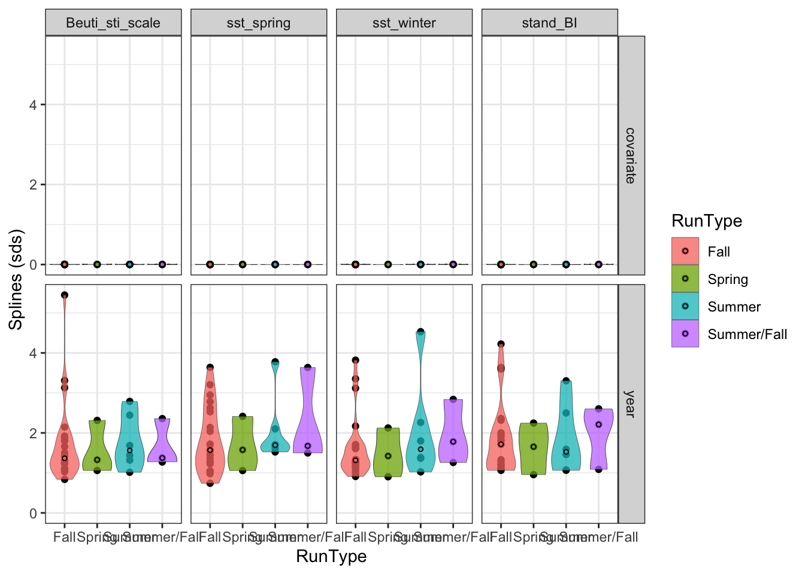

stock_name covariate_name Estimate region RunType
1 Phillips River Fall stand_BI 0.5160524 Salish Sea Fall
2 Cowichan River Fall stand_BI 0.7889535 Salish Sea Fall
3 Quinsam River Fall Beuti_sti_scale 0.5139290 Salish Sea Fall
4 Phillips River Fall Beuti_sti_scale 0.6217505 Salish Sea Fall
5 Cowichan River Fall Beuti_sti_scale 0.7774075 Salish Sea Fall
6 Phillips River Fall sst_winter 0.8029565 Salish Sea Fall
7 Cowichan River Fall sst_winter 0.7560800 Salish Sea Fall
8 Tsoo-Yess Fall Fingerling sst_spring 0.5623773 Washington Coast Fall
9 Phillips River Fall sst_spring 0.8340956 Salish Sea Fall
10 Lyons Ferry Fingerling sst_spring 0.5319221 Columbia-Snake Fall
11 Cowichan River Fall sst_spring 0.7769825 Salish Sea FallPreliminaryResults
Some questions
- How do we interpret a change in the year intercept? Mean survival is temporally varying but the relationship with the covariate is consistent?
- We see a change in mean
- LFO-CV produces an ELPD similar to LOO-CV correct? How do we pull that from the current code?
- Lags relative to run timing - does it make sense to have brood year +1 for all species? Would it make more sense to consider juvenile life history and timing of ocean entry?
- Should we consider a multi-covariate model?
- Could we fit a model to all the data that is the overall model (shared relationship across each runtype or location) - and use that as the overall effect rather than using the mean?
Next steps
- Run PDO and NPGO as well. I am curious if things with evidence of being time-varying show up in this framework
- Look at BEUTI and STI that is not the BEUTI specific STI - these were important covariates in the initial GAM exploration and they did show some non-linearities, so they might have more interesting results. SST reflects what we were finding with the hierarchical structure as well
- Add in predictive capacity
- You could take these smooths to estimate a break point or regime shift across stocks and see if there is a year / time period that pops out
These results were fit with a Bayesian gam that took the following form: brm(Survival_scale ~ s(calendar_year, k=8) + s(covariate, k=8, by =calendar_year), data = temp_surv, control=list(adapt_delta=adapt_d,max_treedepth=max_tree), iter = 3000, cores=3,chains = 3) Coavariates were standardized about a mean of 0 and sd of 1, survival was log transformed.
Looking at the sds for the splines, there is support that the “year” smooth term is non-linear but for all of the covariate effects we find that there is no support for non linearity for essentially all of the stocks. These are the spline standard deviations for year - splines in mgcv is estimated on a matrix - winbugs treats it as a whole smooth curve essentially approximated by random effects - really close to 0 then there is no smoothness - further from 0 is more wiggly
Time - varying intercept non-stationary
Could also first difference log(survival) is the change in the survival impacted by the change in the covariate (not worry about the intercept by first differencing) the interpretation becomes does a one unit change in covariate impact survival - does the change in that relationship vary through time - two wiggly bits means that the variability of the year imapct may get soaked up by intercept. Getting rid of the intercept spline may give us more room for adding more covariates
ggplot(splines_id,aes(x=RunType, y=Estimate, fill=RunType)) +
theme_bw() +
facet_grid(spline~covariate_name)+
geom_point()+
ylab("Splines (sds)")+
#scale_fill_manual(values=col4[3:1], name="Region")+
geom_violin(alpha = 0.75, lwd=0.1, scale='width',trim=TRUE) +
# stat_summary(fun="q.95", colour="black", geom="line", lwd=0.75) +
stat_summary(fun="q.90", colour="black", geom="line", lwd=0.3) +
stat_summary(fun="q.50", colour="black", geom="line", lwd=0.6)+
stat_summary(fun="median", colour="black", size=1, geom="point", pch=21) 
ggplot(splines_id,aes(x=region, y=Estimate, fill=region)) +
theme_bw() +
facet_grid(spline~covariate_name)+
geom_point()+
ylab("Splines (sds)")+
#scale_fill_manual(values=col4[3:1], name="Region")+
geom_violin(alpha = 0.75, lwd=0.1, scale='width',trim=TRUE) +
# stat_summary(fun="q.95", colour="black", geom="line", lwd=0.75) +
stat_summary(fun="q.90", colour="black", geom="line", lwd=0.3) +
stat_summary(fun="q.50", colour="black", geom="line", lwd=0.6)+
stat_summary(fun="median", colour="black", size=1, geom="point", pch=21)
Here are the R2 of the plots. The fit is not great, but that is pretty typical of single covariate models. The covariates are not highly correlated (see 02_DataCopilation.R) so we could consider fitting a full model as well.
There are a couple runs that the models fit well (R2 > 0.5), Phillips River, Cowichan River, Quinsam River, Tsoo-Yess Fingerline (Washington Coast), and Lyons Ferry Fingerling (Columbia). All are fall run types, most are from the Salish Sea except where otherwilse noted. Phillips and Cowichan are both on Vancouver Island
ggplot(bayes_r2_id,aes(x=RunType, y=Estimate, fill=RunType)) +
theme_bw() +
facet_wrap(~covariate_name)+
geom_point()+
ylab("Bayesian R2")+
#scale_fill_manual(values=col4[3:1], name="Region")+
geom_violin(alpha = 0.75, lwd=0.1, scale='width',trim=TRUE) +
# stat_summary(fun="q.95", colour="black", geom="line", lwd=0.75) +
stat_summary(fun="q.90", colour="black", geom="line", lwd=0.3) +
stat_summary(fun="q.50", colour="black", geom="line", lwd=0.6)+
stat_summary(fun="median", colour="black", size=1, geom="point", pch=21) ggplot(bayes_r2_id,aes(x=region, y=Estimate, fill=region)) +
theme_bw() +
facet_wrap(~covariate_name)+
geom_point()+
ylab("Bayesian R2")+
#scale_fill_manual(values=col4[3:1], name="Region")+
geom_violin(alpha = 0.75, lwd=0.1, scale='width',trim=TRUE) +
# stat_summary(fun="q.95", colour="black", geom="line", lwd=0.75) +
stat_summary(fun="q.90", colour="black", geom="line", lwd=0.3) +
stat_summary(fun="q.50", colour="black", geom="line", lwd=0.6)+
stat_summary(fun="median", colour="black", size=1, geom="point", pch=21) filter(bayes_r2_id, Estimate >0.5)%>%dplyr::select(stock_name, covariate_name, Estimate, region,RunType)%>%unique() stock_name covariate_name Estimate region RunType
1 Phillips River Fall stand_BI 0.5160524 Salish Sea Fall
2 Cowichan River Fall stand_BI 0.7889535 Salish Sea Fall
3 Quinsam River Fall Beuti_sti_scale 0.5139290 Salish Sea Fall
4 Phillips River Fall Beuti_sti_scale 0.6217505 Salish Sea Fall
5 Cowichan River Fall Beuti_sti_scale 0.7774075 Salish Sea Fall
6 Phillips River Fall sst_winter 0.8029565 Salish Sea Fall
7 Cowichan River Fall sst_winter 0.7560800 Salish Sea Fall
8 Tsoo-Yess Fall Fingerling sst_spring 0.5623773 Washington Coast Fall
9 Phillips River Fall sst_spring 0.8340956 Salish Sea Fall
10 Lyons Ferry Fingerling sst_spring 0.5319221 Columbia-Snake Fall
11 Cowichan River Fall sst_spring 0.7769825 Salish Sea FallSummary of individual trends (grey) and overall mean trend (black) by location and run type.
Interpretation: With environmental conditions at a mean value, we would not see any major trends through time of Log Age-2 Survival. If anything, we would see slight increases.
conditional_eff_id<-conditional_eff_id%>%filter(stock_name!="Phillips River Fall")
ggplot(filter(conditional_eff_id, covariate <= 0.03 & covariate >= -0.03),
aes(x=calendar_year, y=estimate__)) +
theme_bw() +
ylab("Log Age-2 Survival")+
facet_grid(region~covariate_name)+
geom_line(col='grey', aes(group=stock_name))+
geom_line(data=na.omit(filter(conditional_eff_id, covariate <= 0.03 & covariate >= -0.03)%>%
group_by(covariate_name,region,calendar_year)%>%
summarise(mean=mean(estimate__))), aes(x=calendar_year, y=mean))ggplot(filter(conditional_eff_id, covariate <= 0.03 & covariate >= -0.03),
aes(x=calendar_year, y=estimate__)) +
theme_bw() +
facet_grid(RunType~covariate_name)+
ylab("Log Age-2 Survival")+
geom_line(col='grey', aes(group=stock_name))+
geom_line(data=na.omit(filter(conditional_eff_id, covariate <= 0.03 & covariate >= -0.03)%>%
group_by(covariate_name,RunType,calendar_year)%>%
summarise(mean=mean(estimate__))), aes(x=calendar_year, y=mean))Summary of relationship between each covariate and Age-2 survival by location and run type.
Interpretation: Most relationships are linear, not a lot of support for non-linear relationships. We see a particularly strong negative relationship between both winter and summer SST and Columbia River survival, but less of a relationship for other regions.
conditional_eff_id<-conditional_eff_id%>%filter(stock_name!="Phillips River Fall")#%>%mutate(estimate__=exp(estimate__))
ggplot(filter(conditional_eff_id, calendar_year==2000),
aes(x=covariate, y=estimate__)) +
theme_bw() +
ylab("Log Age-2 Survival")+
facet_grid(region~covariate_name)+
geom_line(col='grey', aes(group=stock_name))ggplot(filter(conditional_eff_id, calendar_year==2000),
aes(x=covariate, y=estimate__)) +
theme_bw() +
facet_grid(RunType~covariate_name)+
ylab("Log Age-2 Survival")+
geom_line(col='grey', aes(group=stock_name))Similar to the plot above, this plot is looking at the trend for 1) 1 sd above average covariate (red) 2) average covariate (grey) and 3) 1 sd below average covariate (blue)
ggplot(filter(conditional_eff_average),
aes(x=calendar_year, y=mean)) +
theme_bw() +
ylab("Log Age-2 Survival")+
facet_grid(RunType~covariate_name)+
geom_line(col='grey')+
geom_line(data=conditional_eff_above, col='red')+
geom_line(data=conditional_eff_below, col='blue')ggplot(filter(conditional_eff_average),
aes(x=calendar_year, y=mean)) +
theme_bw() +
ylab("Log Age-2 Survival")+
facet_grid(region~covariate_name)+
geom_line(col='grey')+
geom_line(data=conditional_eff_above, col='red')+
geom_line(data=conditional_eff_below, col='blue')